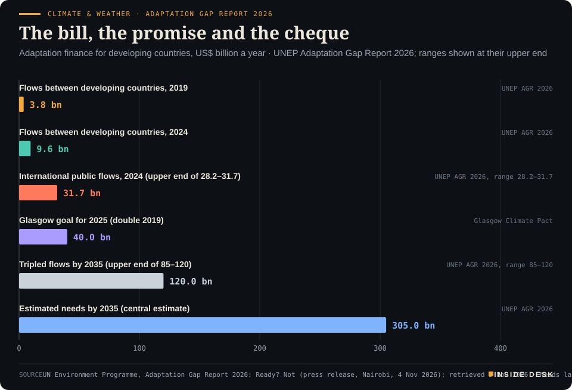

Inside Desk ePaper, Evening ePaper · Thu 5 Nov 2026
Thursday, 5 November 2026Always free
Inside Desk
Evening ePaperPublished 17:30 CET · Berlin
Lead · Climate & Weather
UNEP's Adaptation Gap Report says even a tripling of public money would cover a fifth to under a third of what developing countries need by 2035. The more useful pages are about pipes, laws and procedures.
UNEP puts what developing countries need for adaptation at about $305bn a year by 2035, against roughly $30bn of international public money sent. Elsewhere: the Bank of England raises to 4% and says not to assume a series, a record for the DAX, German factory orders up 4.4%, Friday's power at €275.64, and a third day of bomb hoaxes on European flights.
The Bank of England raised its interest rate for the first time in more than three years, to 4%, because dearer energy is pushing up prices, and it says the next step is not fixed.
Geo-economics · p. 6
Markets & Macro · p. 7
Energy & Industry · p. 10
The day in one sentenceThe Bank of England raised its interest rate for the first time in more than three years, to 4%, because dearer energy is pushing up prices, and it says the next step is not fixed.
ContentsInside Desk · Evening ePaper5 November 2026
UNEP puts what developing countries need for adaptation at about $305bn a year by 2035, against roughly $30bn of international public money sent. Elsewhere: the Bank of England raises to 4% and says not to assume a series, a record for the DAX, German factory orders up 4.4%, Friday's power at €275.64, and a third day of bomb hoaxes on European flights.
11 edition pieces · 11 desks · Published 17:30 CET, 5 November 2026
22 ePaper extras, added , 5 November. They appear only in the ePaper and carry their own time.
17:30 Evening ePaper, updated live until 22:30 with an “Updated” time and a Latest page
Sun 10:00 The Sunday Magazine
Berlin time. Every issue is free.
How to read it
Swipe, use the arrow keys or the page strip. Tap any headline for the reading view. Press / to search, t for contents, +/− to zoom. Download the PDF.
LatestInside Desk · Evening ePaper5 November 2026
Latest
Live: this page and the issue are updated until 22:30 Berlin time.
Evening ePaper published. No updates yet.
LeadInside Desk · Evening ePaper5 November 2026
Climate & Weather · Lead · 4 min
UNEP's Adaptation Gap Report says even a tripling of public money would cover a fifth to under a third of what developing countries need by 2035. The more useful pages are about pipes, laws and procedures.
Every year the UN Environment Programme sends the world an invoice, and every year the world pays a fraction of it. The 2026 edition of its Adaptation Gap Report, published in Nairobi on Wednesday and titled, with some candour, “Ready? Not”, puts the bill at around $305 billion a year by 20351. That is UNEP’s central estimate of what developing countries will need to adapt to heat, drought, flood and rising seas, drawn from national climate plans, national adaptation plans and models1. It largely leaves out the private sector’s own needs, which UNEP says could almost double the figure1.
Against that, international public adaptation finance from developed to developing countries reached $28.2 to $31.7 billion in 20241. That was one billion dollars more than the year before1. Desk arithmetic: even at the upper end, the 2024 flows were about a tenth of the 2035 need.
The tripling, and what it buys. At COP30 in Belém last year, governments agreed in the so-called Global Mutirão decision to make efforts to at least triple adaptation finance by 20351,2. Depending on the starting point, current flows or the Glasgow Climate Pact, that would mean $85 to $120 billion a year by 20351. Adjusted for inflation, UNEP says, that would meet just 20 to 29 per cent of needs1. “The world is not ready to adapt to current climactic conditions, never mind what overshoot of 1.5°C will bring,” said Inger Andersen, UNEP’s executive director1.
Where the money already goes further. For the least developed countries and small island states, tripling flows could meet 49 to 83 per cent of their needs1. Those are the places with the least room to borrow and the most coastline per citizen, and there the gap is closable with sums donors already discuss. UNEP also notes, less happily, that flows to those two groups have fallen from a 2022 peak when they should be rising1.
Money is also starting to move sideways rather than only from north to south. Contributions between developing countries, through multilateral development banks and direct South–South cooperation, rose from $3.8 billion in 2019 to $9.6 billion in 20241. Desk arithmetic: that is about two and a half times as much in five years. Multilateral development banks are likely to have increased their adaptation lending significantly in 2025, and the Glasgow pledge to double finance from 2019 levels to $40 billion by 2025 could still be met1. Whether it is depends on bilateral donors as aid budgets shrink1.
LeadInside Desk · Evening ePaper5 November 2026
Climate & Weather · Adaptation Gap Report 2026The bill, the promise and the chequeAdaptation finance for developing countries, US$ billion a year · UNEP Adaptation Gap Report 2026; ranges shown at their upper end

Bar chart of adaptation finance for developing countries in US dollars a year, from UNEP's Adaptation Gap Report 2026. Flows between developing countries rose from 3.8 billion in 2019 to 9.6 billion in 2024. International public flows from developed countries were 28.2 to 31.7 billion in 2024 (bar at 31.7). The Glasgow goal for 2025 is 40 billion. Tripling by 2035 would give 85 to 120 billion (bar at 120). Estimated needs by 2035, the largest bar, are about 305 billion a year.
Source: UN Environment Programme, Adaptation Gap Report 2026: Ready? Not (press release, Nairobi, 4 Nov 2026); retrieved 5 Nov 2026 · Needs largely exclude the private sector's own needs. · CSV
The dull machinery. The report’s most constructive section is not about dollars. Progress, it says, depends on institutions that turn priorities into built things, and governments are already strengthening them: climate framework laws, platforms where officials learn from one another, coordination across ministries and levels of government, and dedicated mechanisms to raise and manage climate finance1. That is the unglamorous part of adaptation. A sea wall needs a land register, a procurement office and a maintenance budget before it needs a ribbon. …
Geo-economicsInside Desk · Evening ePaper5 November 2026
Geo-economics · 2 min
September orders rose on cars, machinery and home demand. The quarter, the steadier measure, shows a factory sector treading water, not sinking.
German manufacturers took in 4.4% more orders in September than in August, after adjusting for prices, season and calendar, Destatis reported on Thursday1. Without large orders the rise was 5.1%1. Against September 2025 orders were up 3.3%1. That sounds like a rebound, and partly it is one. But August was revised to a fall of 10.1%, slightly less bad than the 10.6% first reported1.
Desk arithmetic: a 10.1% fall followed by a 4.4% rise leaves September’s order level roughly 6% below July’s. So read Thursday’s number as a repair, not a recovery.
The repair has an address. Car industry orders rose 10.5% on the month, after two months that Destatis says were low partly because of production changeovers and works holidays1. Machinery rose 8.3%, helped by one large order for engines and turbines1. Other vehicles, the category of aircraft, ships, trains and military vehicles that has carried many big contracts this year, fell 10.4%1. Consumer goods orders jumped 14.4%, capital goods 5.3%, intermediate goods 0.5%1.
The geography is the quietly encouraging bit. Domestic orders rose 6.6%. Foreign orders rose 2.8%: from the euro zone up 4.5%, from outside it up 1.6%1. In a year of tariff headlines, your neighbours placing more orders is not nothing.
Now the steadier measure, the one Destatis calls less volatile: the three-month comparison. Orders in the third quarter were 0.2% higher than in the second; without large orders, 0.1%1. Real sales in September rose 0.2% on the month and 2.0% on the year1. That is a factory sector treading water. Not a boom, not the collapse August’s headline implied. The dull work of filling order books goes on, one invoice at a time. Nothing here is investment advice.
Geo-economics · Short item · ePaper extra, added
Brussels is drafting a fast tool to curb imports in a market disruption. Beijing promises countermeasures. The talks between them carry on regardless.
China’s ambassador to the EU, Cai Run, said on Thursday that if the EU insists on “restrictive and discriminatory measures against China, China will have to take countermeasures”, Euronews reports1. The target of the warning is a tool the European Commission is drafting, nicknamed a “kill-switch”, that could rapidly limit imports from a country causing serious disruption to the EU market1.
Geo-economics · Brief · ePaper extra, added
China “has always maintained an open attitude” to buying more US farm goods, provided the agreed reciprocal tariff cuts covering $30 billion of goods on each side are implemented, Commerce Ministry spokeswoman Huang Ling said on Thursday, the South China Morning Post reports1. The cuts belong to the US-China Board of Trade arrangement1. An agricultural trader told the paper soybean purchases are on track to meet this year’s target, while a separate $17 billion commitment remains largely unfulfilled1. Semafor notes that China recently restarted US soybean imports but that they remain far below levels before last year’s trade war2. The remarks come after the Democrats’ midterm win, which analysts told the SCMP raises questions ahead of this month’s APEC summit about the administration’s ability to honour commitments1. A trade deal is a promise. The tariff schedule is where it becomes an invoice.
Markets & MacroInside Desk · Evening ePaper5 November 2026
Markets & Macro · 2 min
The index cleared its August high on Thursday. Its biggest defence name fell about 15% on the same screen, because an order the customer has not yet signed cannot be booked.
The DAX set a new record on Thursday. It rose above its August high of 26,618.74 points in the morning4; finanzen.net put the new high at 26,692.903. By the afternoon it was up 0.67% at 26,6152. Analysts quoted by dpa-AFX credited the clarity of the US midterm result; one called it the possible starting shot of a year-end rally, and in the same breath warned of Middle East, inflation and interest-rate risks “under the surface”3.
At the bottom of the same index sat its best-known defence name. Rheinmetall shares fell more than 18% at one point and were down 15.2% at €850.90 in the afternoon, the lowest since February 20252. They have almost halved this year and are close to 60% below the record of €2,008 set a little over a year ago2.
What actually changed. Not demand. Third-quarter sales rose 32% to €3.149 billion and operating profit 62% to €553 million1. What changed was the calendar. The Bundeswehr’s Arminius order to modernise its Boxer fleet is now unlikely to be placed in 2026, so the down payments and sales tied to it move into next year; batches of artillery shells will also be accepted later than planned1. Full-year sales are now put at about €13.2 billion instead of €13.7 to €14.2 billion, the operating margin at about 18.5% instead of about 19%1. Desk arithmetic: against the old midpoint of €13.95 billion, that is €0.75 billion, or about 5.4%, pushed out of the year.
Why the market was harsh anyway. JPMorgan’s analyst called it the fifth sales or profit warning in eleven months2. The finance chief, Klaus Neumann, said the delays lie entirely in the customer’s processes and expects Arminius in the first quarter of 20272. Citigroup’s analyst sees orders delayed rather than vanished; Berenberg’s worries about medium-term estimates2. Both can be right. The backlog is about €78 billion2. Desk arithmetic: that is roughly six years of this year’s reduced sales.
The lesson for you is a dull one, and therefore useful. A record index tells you what the average share did. A company’s guidance tells you when a signature lands on an invoice. Procurement offices run on their own clock, and no rally speeds it up. Nothing here is investment advice.
Markets & Macro · Short item · ePaper extra, added
The guidance went up by a rounding error. The dividend went up 10%. The interesting line is a small plus where there used to be a minus.
Deutsche Telekom reported its third quarter on Thursday, and the headline will sound familiar: more revenue, higher guidance, a bigger dividend. Revenue reached €31.1 billion, 5.5% more on an organic basis, and adjusted EBITDA AL rose 8.0% organically to €12.2 billion1.
Markets & Macro · Brief · ePaper extra, added
Initial claims for US unemployment benefits fell by 6,000 to 189,000 in the week to 31 October, the Labor Department said on Thursday at 14:30 CET1. That matches the 189,000 of mid-July as the lowest weekly figure in the department’s table for 20261. A year earlier the count was 228,0001.
Unadjusted, claims fell 1.6%, while the seasonal factors had expected a rise of 1.4%1. The people already drawing benefits rose by 23,000 to 1,718,000 in the week to 24 October1.
The reading is plain: few people are being let go, while the number already on benefits edged up rather than down. A payroll office counts both. Nothing here is investment advice.
Politics & InstitutionsInside Desk · Evening ePaper5 November 2026
Politics & Institutions · 2 min
The Bundestag passed the driving-licence reform on Thursday. The promise is a cheaper card in your wallet; the proof will be a price list that driving schools must now publish.
A car licence in Germany costs on average about €3,400, according to the federal transport ministry, and in some regions €4,000 to €4,5001,2. On Thursday the Bundestag approved the reform meant to bring that down2. Transport Minister Steffen Bilger (CDU) says learners could save several hundred euros, and in the best case up to €1,0001,3. Desk arithmetic: €1,000 off €3,400 would be a cut of about 29%.
The method is unglamorous, which is why it might work. Compulsory classroom attendance for theory goes; driving schools may teach digitally, including by app1. The fixed rule of twelve 45-minute special drives, at night or on the motorway, is dropped, and schools set the number according to the learner’s ability1. The theory test catalogue shrinks, and each question will score one point instead of two to five weighted error points, though safety-critical questions still may not be answered wrongly1. Many documentation duties for driving schools are cut1.
Two changes are worth more than the headline. First, lay training: after passing theory and six professional lessons, learners may practise with “a close person”, such as a parent or grandparent, as in Luxembourg and Austria; the Länder get five years to try it1. Second, every driving school’s prices and pass rates are to be published online1. There is no fixed price, and schools still set their own fees; the exam fees at TÜV or DEKRA are set by law1.
The sceptics have a point, and it is a useful one. The ACE motoring club says the promised €1,000 “stands on paper so far” and that it is uncertain whether it reaches learners’ wallets2. Statistics agree that the problem was real: Destatis figures cited by tagesschau show licence costs rose faster than consumer prices each year from 2021 to 2024, by 5.8% in 2024 against 2.2% overall1.
Politics & Institutions · Short item · ePaper extra, added
Mary Peltola leads Senator Dan Sullivan by a few hundred ballots. The state counts mail for ten days and ranks preferences after that, on a date it set in advance.
Alaska’s Senate seat is still open. As of Wednesday night, Democrat Mary Peltola led the Republican incumbent, Senator Dan Sullivan, by 637 votes, according to the Associated Press as reported by Al Jazeera, with nearly a quarter of votes uncounted1. Early on Wednesday she had 48% to his 47.7%; the other Dan Sullivan on the ballot, retired Petersburg teacher Dan J. Sullivan, had 1.7%2.
Nobody needs to guess the timetable, because the state printed it. …
By Thursday afternoon seven of the CDU’s 17 regional chairs had backed Ilse Aigner, the 61-year-old CSU president of the Bavarian Landtag, to succeed Frank-Walter Steinmeier, Handelsblatt counts, among them Baden-Württemberg’s Manuel Hagel and the three eastern CDU premiers1. The CSU has backed her and the SPD has signalled approval1. Baden-Württemberg’s Green premier, Cem Özdemir, called her “down to earth”, and asked for “a little more restraint” so that speculation does not come at the cost of the candidates and “the dignity of the office”2. Chancellor Friedrich Merz has so far committed only to a woman, and insists the right to propose lies with the CDU as the strongest force2. Other names mentioned from the CDU include Julia Klöckner, Karin Prien, Annegret Kramp-Karrenbauer and Ines Claus1,2. The office has no army and no budget. Its power is that most people trust it. Choosing quietly is part of keeping it so.
Psychology & BehaviourInside Desk · Evening ePaper5 November 2026
Psychology & Behaviour · 2 min
Two political scientists find that people often prefer an improving trend even when a steady one pays more. Part of it is the chart; part of it is not.
The document. “Are Voters Myopic or Looking for Improvement?”, by Markus Prior of Princeton University and Talbot M. Andrews of Cornell University, in the American Political Science Review1. Political science has long called voters short-sighted: when judging an incumbent, they weigh the economy of the final year and forget the rest of the term1. Two days after a midterm, the paper asks whether that is a blind spot or a preference.
The line. In a choice experiment with more than 2,000 respondents, people saw two four-year paths: a flat rate of growth and a steadily rising one1. On average, a flat income growth rate had to reach at least 2.3% before people gave up an improving trend that averaged only 1.3%1. For temporary job creation, people preferred an improving market averaging 243,750 jobs a year unless the steady market guaranteed at least 350,0001. Between 32% and 46% of the large sample, depending on the domain and time direction, chose rising paths that were worse in every single year1.
The lines around it. In earlier surveys using four-year bar charts, people looking backwards weighted the most recent year most, which repeats the old “myopia” finding1. But people judging projections of the future weighted the most distant year most1. Across past and future, the highest ratings went to data that steadily improved1. On this reading, voters are not so much short-sighted as slope-sighted.
The caveats. Part of the effect is the picture. When the researchers showed the cumulative total on screen and greyed out the empty space at the edges, so nobody could mentally extend the line, the preference for improvement shrank1. It did not disappear1. The charts were clean and smooth; real economies are jagged, and voters may react differently to bumps1. Whether people actually reward incumbents this way when they vote is untested1.
Psychology & Behaviour · Short item · ePaper extra, added
A Nature Human Behaviour study separates obligations to close family and friends from general friendliness, and finds the East–West gap that older surveys missed.
For three decades, questionnaires about collectivism kept producing odd results; one meta-analysis even concluded that Japan was less collectivistic than the United States1. A team led by Thomas Talhelm of Arizona State University argues the surveys were measuring the wrong thing1. Classic scales mixed “warm fuzzy” items, such as enjoying time with others, with items about binding duties to specific people. Western respondents agreed more with the first kind, cancelling out the second1.
The team built a 14-item scale of what it calls “responsibilism”: concrete obligations in close relationships, paired with weaker obligations to strangers1. …
Some psychologists have proposed that people with social anxiety have a wider “cone of gaze”: they judge more angles as someone looking straight at them1. A team led by Madeleine Moses-Payne at University College London pooled ten earlier studies with 403 participants and found a modest effect, but the studies were small and inconsistent1. So they ran three new online experiments with 514 people1. Combined, they found no overall link between social anxiety and the cone of gaze, and angry faces did not widen it either1. Participants were not clinically diagnosed and testing was online, so a lab setting might differ1.
A finding that fails to replicate is not a failure. It is the system working: one fewer shaky marker on the way to the clinic, and a reminder for you that feeling watched is not the same as seeing it.
Energy & IndustryInside Desk · Evening ePaper5 November 2026
Energy & Industry · 2 min
Germany's day-ahead auction priced Friday at the highest daily average since 29 October. The floor of the day, not just the peak, is what has moved.
The day-ahead auction for Friday 6 November settled at an average of €275.64 per megawatt hour for Germany and Luxembourg, SMARD data show1. That is €18.26 above Thursday’s €257.38 and the highest daily average since the €314.85 of Thursday 29 October1. Desk arithmetic: it is about 1.9 times September’s average of €144.82.
Energy · PowerFriday clears €275, the dearest day since 29 OctoberGermany/Luxembourg day-ahead electricity price, daily average by delivery day, € per MWh
Line chart of the daily average German-Luxembourg day-ahead electricity price from 1 September to 6 November 2026, in euros per megawatt hour. It falls to €30.12 on Saturday 24 October and €13.12 on Sunday 25 October during the storm, then climbs to €314.85 on Thursday 29 October, the highest daily average of 2026 so far. From 29 October every delivery day has stayed near or above €250, with Wednesday 4 November at €248.99 and Thursday 5 November at €257.38, and the latest value is €275.64 for delivery on Friday 6 November, the highest since 29 October.
Source: Bundesnetzagentur | SMARD.de, day-ahead price DE-LU (filter 4169), delivery days 1 Sep to 6 Nov 2026, retrieved 5 Nov 2026 · CC BY 4.0 · CSV
The shape of the day. The hourly curve has the familiar two humps. Prices climb from €229.65 at 05:00 to €323.06 at 07:00, ease to €226.97 at noon when the sun does some work, and then rise into the evening, peaking at €357.12 for the hour from 18:001. The spread between the dearest and the cheapest hour is €134.741.
The floor is the news. Friday’s cheapest hour, €222.38 at 03:00, would have been an expensive whole day in September: only two September delivery days, the 14th and the 22nd, averaged more1. …
Energy & Industry · Short item · ePaper extra, added
The wind-turbine maker doubled its operating profit. It also installed fewer machines than a year ago, held up by permits, lorries and blades.
Nordex, the Hamburg wind-turbine maker, published its third quarter on Thursday morning, and the numbers are those of a business that has learned to price its work. Sales rose 28.2% to about €2.19 billion; EBITDA more than doubled to €278.2 million, a margin of 12.7% against 8.0% a year earlier1. Net profit almost tripled to €147.1 million1. Free cash flow was €379.1 million1.
Energy & Industry · Brief · ePaper extra, added
Brent crude rose about 2.7% to $97.20 a barrel by 14:30 CET on Thursday, after three sessions of losses that included a fall of more than 8% on Wednesday1. European gas, the Dutch TTF benchmark, recovered about 1.5% to €89.35 per megawatt hour, having dipped towards €85 earlier in the day1.
The sell-off had been driven by hopes that the US midterm result would add pressure for an end to the US–Iran war, with Qatar mediating1. The rebound has more physical reasons: LNG deliveries from the Gulf remain disrupted ahead of winter, and forecasts of colder weather across north-western Europe point to higher heating demand on depleted storage1.
Hope moves prices for a day. Tankers and thermometers move them for a winter.
Money, FX & CommitteesInside Desk · Evening ePaper5 November 2026
Money, FX & Committees · Podium vs Print · 2 min
The Bank of England raised rates to 4% and told you not to assume a series. Within the hour, the money markets priced roughly three more rises anyway.
Podium
“Today's increase shouldn't be seen as the first in an inevitable long sequence of hikes. But, unless the conflict in the Middle East is resolved, neither does it seem likely to be the last increase.”
Andrew Bailey, Governor of the Bank of England, Thursday 5 November 2026, 13:00 CET, with the Monetary Policy Committee's decision
Print76 basis points
Traders priced around 76 bps of further tightening by the end of 2027, compared with roughly 67 bps before the decision; two-year gilt yields rose about 3 basis points to 4.77%.
UK interest-rate markets, as reported by Reuters, Thursday 5 November 2026, after the decision (report timed 13:56 CET)
The podium. At 13:00 CET the Bank of England raised Bank Rate by 0.25 percentage points to 4%, its first rise in more than three years3. The vote was 8–1, and the one dissent wanted more: Catherine Mann preferred 0.5 points, to 4.25%1. The Bank’s reasoning is unusually plain. UK inflation rose to 3.5% in September and is expected to reach about 5% by the middle of next year; evidence of knock-on effects on wages and other prices is still “limited”, but the pressure “in the pipeline” now warrants a rise1. Then the Governor drew a careful line: today’s increase “shouldn’t be seen as the first in an inevitable long sequence of hikes. But, unless the conflict in the Middle East is resolved, neither does it seem likely to be the last”2. The minutes add: “Monetary policy is not on a pre-set path”1.
The print. The market heard the second sentence louder than the first. Reuters reported that traders priced around 76 basis points of further tightening by the end of 2027, up from roughly 67 before the decision, and that two-year gilt yields rose about 3 basis points to 4.77%3. Sterling barely moved, at about $1.34683. Desk arithmetic: 76 basis points is roughly three more quarter-point rises, which would take Bank Rate to about 4.75%.
The gap. It is smaller than it looks. “Not inevitable” is not “not likely”, and the Governor tied further moves to one condition he does not control. The market simply attaches a probability to that condition and writes it down. Not every reader agreed with the pricing: BlackRock’s UK strategist told Reuters markets price “too many” rises and sees room for one more, and Schroders’ chief economist expects a peak at 4.25%3. That disagreement is the system working: the Bank publishes its reasons, the minutes name each vote, and the price moves in public.
For you. If you are fixing a mortgage or a savings rate in pounds, you are buying the market’s number, not the Governor’s sentence. The Bank meets again on 17 December1. Nothing here is investment advice.
Money, FX & Committees · Short item · ePaper extra, added
Productivity jumped 3.6% in the third quarter and unit labour costs fell. The other side of that good news is printed two paragraphs down.
The US Bureau of Labor Statistics published its third-quarter productivity figures on Thursday, and the top line is the kind central bankers like. Output per hour in the non-farm business sector rose at an annual rate of 3.6%, as output grew 3.7% and hours worked only 0.1%1. Unit labour costs, the wage bill per unit produced, fell 0.7%1.
Money, FX & CommitteesInside Desk · Evening ePaper5 November 2026
Money, FX & Committees · Brief · ePaper extra, added
The Bank of England’s 8–1 vote to raise rates to 4% held one surprise. In contrast to expectations in a Reuters poll, the dissent came not from someone seeking to keep rates on hold, but from someone seeking more2. Catherine Mann preferred 0.5 points, to 4.25%1.
Her reasoning, as the minutes record it, is about credibility: “an activist approach was needed” to stop inflation becoming embedded before price and wage-setting reach thresholds that could cause “non-linear responses”1. The other eight noted that evidence of such second-round effects has so far been limited1.
A published, named vote is a small piece of institutional machinery. It lets you see the argument, not just the result.
Ordinary & Inherited LifeInside Desk · Evening ePaper5 November 2026
Ordinary & Inherited Life · 2 min
A European Investment Bank survey measures what energy prices are doing to German households. The answer is a list of small economies, some sensible and some worrying.
Surveys about money usually measure mood. This one, from the European Investment Bank’s annual climate survey, measures behaviour, and that makes it worth reading slowly1.
The ledger.
- 66% of people in Germany say they can afford noticeably less because energy prices rose over the past year, against an EU average of 60%1.
- 42% have turned the heating down1.
- 40% are saving on food or health spending1.
- 44% have cut necessary car journeys, for shopping, doctors’ appointments or visits to public offices; the EU average is 31%1.
- 28% now drive more slowly to save fuel1.
Some of these are good housekeeping. Others are the warning lights. A colder living room is a choice; a skipped trip to the doctor or the town hall is a cost deferred, often to a moment when it is larger. The EIB’s vice-president, Nicola Beer, called high energy prices “an enormous burden” for millions, as quoted by Bild1.
What the dull advice is worth. According to the consumer advice centres, every degree less room temperature cuts heating energy use by about 6%; rooms should not stay below 16 °C, to avoid damp and mould1. The Federal Environment Agency puts the saving from a water-saving shower head at €100 to €200 per person a year in hot-water costs1. It also says a car at 100 km/h instead of 120 uses about 15% less fuel on the same stretch1. In Euronews’s worked example, a petrol car using 8 litres per 100 km at 120 km/h, at €2.11 a litre, saves about €2.53 per 100 km; over 5,000 motorway kilometres a year that is around €1271. Your car, route and traffic will change the figure1.
What it means for you. Take the cheap, reversible savings first: a degree in rooms you barely use, short bursts of airing instead of tilted windows, a switchable power strip for the television corner1. Keep the appointments. …
Ordinary & Inherited Life · Short item · ePaper extra, added
Stiftung Warentest has tested nine child disability policies. Seven are good, and the ones that only pay after an accident are not enough.
Few parents want to think about it, which is why the numbers help. At the end of 2025 about 231,000 children and young people under 18 in Germany were officially severely disabled, roughly 1.7%, or one in every 601. “Severely” means a degree of disability of at least 50, which can follow a serious chronic heart or lung condition as well as an accident1.
Stiftung Warentest has now tested nine child disability insurance offers from five insurers1. All of them pay a lifelong pension of €1,500 a month once a disability of 50% or a degree of disability of 50 is established; three add a one-off lump sum, and the test winner pairs the pension with €36,0001. Seven policies were rated good, two adequate1. …
Ordinary & Inherited Life · Brief · ePaper extra, added
Energieversorgung Halle said on Tuesday that natural gas for private customers in basic supply will cost 20% more from the turn of the year1. Its chief, Olaf Schneider, points to wholesale gas prices that have more than tripled since the Iran war began1. “We are back in full crisis mode,” he said1.
In the same region, enviaM says it will keep basic-supply gas and electricity prices stable at the turn of the year, because it buys very far ahead1. The newsletter’s author adds a fair caution: a stable tariff is not automatically a cheap one1.
The lesson for you is local and practical. Wait for your own supplier’s letter, compare the price per kilowatt-hour rather than the percentage, and remember that a price rise gives you a special right to cancel. Nothing here is investment advice.
Tech & ComputeInside Desk · Evening ePaper5 November 2026
Tech & Compute · 2 min
A flaw in WordPress's own update process is being used in attacks. The repair has existed for a week; the gap is the people who have not yet pressed the button.
The most dangerous moment for a website is not the day a flaw is found. It is the week after the fix is published, when the repair is public and the attackers can read it too. WordPress, the software behind a great many small websites, is in that week now.
The WordPress security team released version 7.1.4 on 28 October to close a weakness in its upgrade process “which can lead to remote code execution during the upgrade window”, and asked owners to update immediately1. The flaw, CVE-2026-119977, is a race condition: during a full core upgrade, predictable staging paths on the server can be reached from the web, and a remote attacker without an account can, in a hard-to-pull-off attack, run code1.
On Tuesday the US Cybersecurity and Infrastructure Security Agency confirmed that attackers are using it and added it to its catalogue of known exploited vulnerabilities1. Federal civilian agencies have until Friday to secure their systems; CISA urged private defenders to treat it as a priority too1. The security firm Wordfence said over the weekend that it had blocked 13,095 attacks on this flaw in 24 hours1. This is not a first: in July a separate chain of WordPress flaws was exploited within days of public exploit code appearing1.
Nothing about this calls for a new tool. It calls for an inventory. Many WordPress sites belong to marketing teams, associations or agencies rather than to anyone who thinks of themselves as an IT department2. The useful questions are dull ones: which sites carry your name, who holds the admin login, and what version they show today. If a site is on 7.1.4 or later, the known door is shut. If nobody can say, that is the finding.
If you run a site yourself, update, then look for administrator accounts or files you do not recognise2. If someone else runs it for you, ask them for the version number and the date it was installed. …
Tech & Compute · Short item · ePaper extra, added
TeraWulf has secured Google's credit support for the debt behind its Anthropic data-centre campus in Kentucky. The interesting part is not the chips. It is who carries the risk if a tenant cannot pay.
Artificial intelligence is usually sold as software. Underneath, it is a lease, a loan and a building site. On Wednesday the US data-centre developer TeraWulf said it had signed credit-support agreements with Google for the debt financing behind about $19 billion of contracted lease commitments with Anthropic at its Justified campus in Hawesville, Kentucky1.
The mechanism is old-fashioned. A lender cares less about the promise of a technology than about who pays if the tenant does not. Google’s parent Alphabet carries senior unsecured ratings of AA+ from S&P and Aa2 from Moody’s, the company notes1. “Cost of capital is fundamental to infrastructure development,” said TeraWulf’s finance chief, Patrick Fleury1.
The second agreement is with the engineering firm Fluor, for the engineering, procurement and construction of three data-centre buildings, with open-book cost reporting and guaranteed maximum pricing still being set as work progresses1. The company says phased completions are expected to begin in late 2027 and run through the second quarter of 20281. It also names labour availability as an increasingly important constraint on large data-centre builds1.
Read it as an invoice rather than a headline. One AI customer’s demand, turned into three buildings, needs a rated guarantor, a contractor with subcontractors, and a calendar that runs into 20281. “Megawatts alone do not create shareholder value,” the chief executive, Paul Prager, said1. On that, at least, the press release and the sceptics agree. Nothing here is investment advice.
Tech & ComputeInside Desk · Evening ePaper5 November 2026
Tech & Compute · Brief · ePaper extra, added
Meta has bought Conductor, a two-year-old start-up whose software lets programmers run several AI coding agents side by side in separate workspaces; Meta confirmed the deal but gave no terms1. The agents themselves come from labs such as Anthropic and OpenAI, not from Conductor1.
The founder, Charlie Holtz, promised “something new” early next year1. The more useful line is the dull one: the core features keep working until then, but Conductor’s cloud service shuts down on 20 November, after which the company will begin deleting user cloud data1.
If your team uses it, the job this week is not to admire the deal. It is to export what lives in that cloud, write down which tools depend on it, and decide on a replacement before the date arrives. Small vendors get bought; good inventories survive the purchase.
Health & CareInside Desk · Evening ePaper5 November 2026
Health & Care · 2 min
Patients mainly cared for by women physicians died less often within 30 days. The study cannot say why, and its authors are careful to say what it is for.
A large new study from Canada has a headline that invites a quarrel. Read past the headline and it offers something more useful: a list of habits.
Researchers analysed 958,150 adult patients admitted to hospital in Ontario between 2008 and 2022; their median age was 742. All had one of seven common acute medical conditions: heart attack, heart failure, atrial fibrillation, stroke, pneumonia, COPD or gastrointestinal bleeding1. The team looked at 15,165 physicians and asked who was mainly responsible for each patient over the whole stay, not just at admission. In about 27% of cases that was a woman, in about 73% a man1.
The adjusted 30-day death rate was 12.3% for patients mainly treated by women physicians and 13.7% for those treated by men, a gap of 1.4 percentage points1. Readmissions within 30 days differed far less: 18.6% against 18.9%1. Death rates were also lower at 90 days and one year, and a higher share of days under a woman’s care went with better results1. Atrial fibrillation was the exception, with no clear link1.
The study shows an association, not a cause1. The authors point to explanations from earlier research: more patient-centred communication and more time for conversation, more consistent use of appropriate tests and guideline-based treatment, more caution with some treatments and more frequent consultation with colleagues1. Each of these is teachable, auditable and dull, which is exactly why it matters.
One of the authors, Angela Jerath, put the point plainly: the aim is not to favour one group of doctors, but “to identify practices and behaviours” that can improve care across the whole system1. For you as a patient or relative, the practical lesson is not to request a doctor by sex. It is to ask the questions that good practice answers anyway: what is the plan, which guideline does it follow, and who else has looked at it.
Health & Care · Short item · ePaper extra, added
A German study finds that hot days raise the risk of patients drying out after they are admitted. The fixes it names are water, cooling and staff rotas.
A hospital is meant to be the safest place to be ill. On very hot days, a new study suggests, it is a little less so, and the reason is as basic as a glass of water.
Researchers at the RWI Leibniz Institute analysed billing data from a large German statutory health insurer covering 41.3 million hospital admissions in 2,108 clinics between 2005 and 20251. They looked only at patients with no dehydration recorded on arrival. Compared with stays on days of 15 to 20 °C, the probability of becoming dehydrated in hospital rose by 0.63 percentage points on days above 30 °C, a 17% increase on a baseline of 3.7%1.
The effect was clearly stronger in older patients and in people with dementia1. …
Health & Care · Brief · ePaper extra, added
When a doctor needs tissue from a lung nodule, a needle goes in under CT guidance. Each extra pass raises the chance of a pneumothorax, a partly collapsed lung. A multicentre randomised trial led from Huazhong University in Wuhan tested an AI navigation system, GPS-Lung, against standard guidance1,2.
With the system, surgeons needed fewer punctures (2.0 against 2.5 on average), finished faster (20.4 against 23.2 minutes), used less radiation, and saw pneumothorax in 12.7% of patients against 23.9%1. Desk arithmetic: that is close to half the rate.
It is one trial, in one health system, of a tool partly developed with a device maker’s researchers1. The welcome part is the method: registered in advance, randomised, published open access. That is how a promising tool earns its place in a German radiology suite.
Security & OrderInside Desk · Evening ePaper5 November 2026
Security & Order · 2 min
A third day of bomb threats hit European flights on Thursday. Fighter escorts and searches are expensive and dull. That is exactly why they work.
At least 15 European flights were targeted by bomb threats on Thursday, POLITICO reports, after seven similar incidents earlier in the week in which no explosives were found1. Euronews, with AFP, counts more than 20 hoaxes this week, Ryanair the target of at least seven, and three diversions on Thursday, all of which landed safely2.
The list reads like a timetable. An Aer Lingus flight from Dublin to Rome was escorted by French military aircraft to the Évreux air base, west of Paris; the 157 people on board were taken to safety, the French prime minister’s office said1,2. A Wizz Air flight from Milan to Warsaw was diverted to Vienna, and a Ryanair flight from London Stansted to Sofia landed in Plovdiv1,2. Italian jets escorted a Finnair flight to Rome; Bulgaria’s air force escorted three planes bound for Sofia2. Prague Airport said the threats it received came by email from anonymous addresses, and Czech police judged their credibility “low”2. Copenhagen police said there “has never been any danger” to passengers2.
Who is behind it is not known. EU Transport Commissioner Apostolos Tzitzikostas said it was “too early to draw conclusions” on whether the incidents are linked, and that the EU-level information-sharing mechanism for aviation security has been activated; “We don’t have information yet whether this is a cyber attack,” he said1,2. Air France-KLM’s chief executive, Ben Smith, said the threats were coming “in a coordinated way”1. Euronews notes they arrive amid a rise in hybrid attacks in Europe that authorities have sometimes linked to Russia or Iran2. …
Security & Order · Short item · ePaper extra, added
Poland's internal security agency says a group supplied Russia with ammunition parts for two and a half years. The case was built from border checks and search warrants.
Poland’s internal security agency, the ABW, said on Thursday it had detained six people suspected of working for Russian intelligence and of supplying Russia with “significant quantities” of military components, used in particular to make ammunition and weapons systems1,2. Between 21 October and 2 November its officers searched 21 locations in the Warmian-Masurian, Pomeranian and Greater Poland provinces1.
Five of the detained are Poles aged 25 to 52; one is a 37-year-old Russian woman, wrote Tomasz Siemoniak, who coordinates Poland’s special services2. Four, including the Russian national, have been charged with espionage and remanded for three months by a court; the other two face non-custodial measures1,2. All face charges of taking part in an organised criminal group and of breaking rules on trade in strategic goods and technologies1.
According to the investigation, the scheme ran from June 2023 to December 2025 across Poland, Lithuania and Russia2. The group allegedly ordered and bought goods, including shell casings and projectiles, and drove them into the Kaliningrad region in vehicles with hidden compartments; some were intercepted by Polish border officers2. Prosecutors in Białystok supervise the case, and the ABW calls the investigation ongoing1. None of the suspects has been convicted.
The useful detail is the last one about the border. Sanctions are announced in capitals, but they are enforced by a customs officer opening a boot. Each intercepted box became evidence, and the evidence became warrants. That is how a long-running scheme ends: not with a speech, but with a file.
Security & OrderInside Desk · Evening ePaper5 November 2026
Security & Order · Brief · ePaper extra, added
Germany’s National Security Council, chaired by Chancellor Friedrich Merz, met on Tuesday and stressed the need for further growth in “unmanned systems in all dimensions”, counter-drone capability, air defence and long-range weapons, government spokesman Stefan Kornelius said1. The council is a coordinating body, not a buyer: contracts and funding still run through the ministries and the Bundestag’s budget committee, and the statement named no quantities, timetables or sums1. On Wednesday, at the Berlin Security Conference, Defence Minister Boris Pistorius and Lithuania’s Robertas Kaunas signed a declaration putting air defence and counter-drone work at the top of their cooperation2. It is not a purchase agreement either; a separate action plan is to follow2. Germany’s 45th Armoured Brigade in Lithuania is to reach about 5,000 personnel and civilians at full capability, with main infrastructure due by the end of 20272. Priorities are words. Watch for the budget lines that turn them into hardware.
Climate & WeatherInside Desk · Evening ePaper5 November 2026
Climate & Weather · Short item · ePaper extra, added
Türkiye's flagship COP31 goal is a share of final energy, not a speech. Which is why it can be checked.
The headline initiative of COP31 is not a treaty clause but a ratio. Governments that sign the voluntary pledge drafted by the Turkish presidency will commit to raising electricity’s share of total energy consumption to 35% globally by 20351. The pledge is due to be launched formally on Energy Day, 10 November, with the list of signatories; Australia is already on it and European countries are likely to join, while India could well say no and China is a maybe, according to Climate Home News1.
The ratio is useful precisely because it is dull. Electricity today accounts for around 23 to 24% of final energy consumption, so reaching the target means adding roughly one percentage point a year1. On current policies, Climate Action Tracker estimates the share reaches only 28% by 2035, with transport falling furthest behind despite rising sales of electric cars1.
Critics point out that the text does not say the power must be clean; it speaks of “diverse and sustainable energy sources”1. COP31 president Murat Kurum argues that wider use of electric vehicles and heat pumps will “automatically” cut fossil fuel use1. Experts quoted by Climate Home stress a more practical bottleneck: grids and storage, especially in developing countries, have not kept pace with fast-growing renewable capacity1.
That is where to look. A heat pump is a purchase; a grid connection is a queue. Pledges get signed in Antalya. The percentage gets built in substations, transformer orders and permitting offices, and it is published every year, so you will be able to check.
Climate & Weather · Brief · ePaper extra, added
Veronica Gundu, lead negotiator for mitigation at the Africa Group of Negotiators, says 51% of climate financing is beginning to flow in debt form1. Her question for Antalya is about quality rather than headline size: of the new goal of $300 billion a year, and the $1.3 trillion it seeks to mobilise, “how much is going to flow in grant form?”1. She points to Article 9.1 of the Paris Agreement, which calls on developed countries to provide public finance, and says many African countries are already too indebted to borrow for adaptation1. She also wants adaptation finance tripled and notes that the Adaptation Fund missed its $300 million mobilisation target last year1.
It is a reasonable accounting point. A loan and a grant of the same size appear as the same figure in a pledge table. They look very different on a finance ministry’s balance sheet ten years later.
Charts and dataInside Desk · Evening ePaper5 November 2026
Charts and data
Energy · PowerFriday clears €275, the dearest day since 29 OctoberGermany/Luxembourg day-ahead electricity price, daily average by delivery day, € per MWh
Line chart of the daily average German-Luxembourg day-ahead electricity price from 1 September to 6 November 2026, in euros per megawatt hour. It falls to €30.12 on Saturday 24 October and €13.12 on Sunday 25 October during the storm, then climbs to €314.85 on Thursday 29 October, the highest daily average of 2026 so far. From 29 October every delivery day has stayed near or above €250, with Wednesday 4 November at €248.99 and Thursday 5 November at €257.38, and the latest value is €275.64 for delivery on Friday 6 November, the highest since 29 October.
Source: Bundesnetzagentur | SMARD.de, day-ahead price DE-LU (filter 4169), delivery days 1 Sep to 6 Nov 2026, retrieved 5 Nov 2026 · CC BY 4.0 · CSV
Latest values
Series
Value
Date
Chart
Day-ahead DE-LU
275.64
6 Nov 2026
Friday clears €275, the dearest day since 29 October
Last data point of each series in the charts above, from the Inside Desk data archive. Sources under each chart.
Back pageInside Desk · Evening ePaper5 November 2026
Before you close the tab
The day in one sentence
The Bank of England raised its interest rate for the first time in more than three years, to 4%, because dearer energy is pushing up prices, and it says the next step is not fixed.
One thing you can do this week
When a big story breaks, pick one and read the original before the reactions: the statement itself, the minutes, the press release. Today's Bank of England summary is a few short paragraphs 2. Five commentaries tell you how people feel; the source tells you what was actually said, and it is usually calmer than the noise around it.
A habit, not advice.
What went right
A species that falls below 50 animals in the wild is not doomed, and a study published this week counts why 1. Researchers from Monash University and the Zoological Society of London looked at every bird and mammal known to have dropped below 50 wild individuals since 1950, and tracked 141 species in detail 1. Of the 51 that got direct help, such as predator control, habitat restoration, captive breeding or moving animals to safer sites, 61% recovered to at least 100 individuals; of those left alone, only 2% did, and 37% went extinct 1. Australia's Lord Howe woodhen went from 23 birds in the late 1970s to more than 1,600 today 1. "Abandoning critically endangered species because their numbers look too low is a mistake," said Professor Rohan Clarke 1. Small numbers are a warning, not a verdict.
In euros at home
A litre of Super E10 cost on average €2.041 in Germany, 4.3 cents less than a week earlier, and a litre of diesel €2.260, down 2.9 cents, the ADAC reported on Wednesday 3. Brent crude closed on Tuesday at about $104 a barrel, roughly $10 lower than a week before, and the ADAC expects room for further falls at the pump 3. Late in the morning, shortly before the daily price rise at 12:00, the national E10 average briefly dipped below €2 3. Desk arithmetic: a 50-litre tank of E10 costs about €102 at that average, about €2.15 less than last week; the same tank of diesel costs about €113, about €1.45 less, and about €11 more than E10. Small, but heading the right way.
Desk arithmetic on ADAC national averages published 4 Nov 2026. Prices at your station differ by region, brand and time of day. Nothing here is advice.
Small words
Second-round effects
What happens when a price shock stops being only about that one price 2. The first round is direct: energy costs more, so bills and fuel cost more. The second round is when firms raise their other prices and workers ask for higher pay to keep up, and those rises keep inflation high even after energy calms down 2. The Bank of England says there is still limited evidence of this so far, but that the risk has grown; that risk is the main reason it raised rates today 2.
Commentary for information only. Not investment, legal, tax, medical or political advice. Inside Desk is free and reader-supported. Every number is sourced in the piece it appears in.
This issue has been updated.
All articles in this edition
Climate & Weather · 4 min read
$305bn a year needed, about $30bn sent: the adaptation bill arrives four days before Antalya
UNEP's Adaptation Gap Report says even a tripling of public money would cover a fifth to under a third of what developing countries need by 2035. The more useful pages are about pipes, laws and procedures.
Every year the UN Environment Programme sends the world an invoice, and every year the world pays a fraction of it. The 2026 edition of its Adaptation Gap Report, published in Nairobi on Wednesday and titled, with some candour, “Ready? Not”, puts the bill at around $305 billion a year by 20351. That is UNEP’s central estimate of what developing countries will need to adapt to heat, drought, flood and rising seas, drawn from national climate plans, national adaptation plans and models1. It largely leaves out the private sector’s own needs, which UNEP says could almost double the figure1.
Against that, international public adaptation finance from developed to developing countries reached $28.2 to $31.7 billion in 20241. That was one billion dollars more than the year before1. Desk arithmetic: even at the upper end, the 2024 flows were about a tenth of the 2035 need.
Climate & Weather · Adaptation Gap Report 2026The bill, the promise and the chequeAdaptation finance for developing countries, US$ billion a year · UNEP Adaptation Gap Report 2026; ranges shown at their upper end
Bar chart of adaptation finance for developing countries in US dollars a year, from UNEP's Adaptation Gap Report 2026. Flows between developing countries rose from 3.8 billion in 2019 to 9.6 billion in 2024. International public flows from developed countries were 28.2 to 31.7 billion in 2024 (bar at 31.7). The Glasgow goal for 2025 is 40 billion. Tripling by 2035 would give 85 to 120 billion (bar at 120). Estimated needs by 2035, the largest bar, are about 305 billion a year.
Source: UN Environment Programme, Adaptation Gap Report 2026: Ready? Not (press release, Nairobi, 4 Nov 2026); retrieved 5 Nov 2026 · Needs largely exclude the private sector's own needs. · CSV
The tripling, and what it buys. At COP30 in Belém last year, governments agreed in the so-called Global Mutirão decision to make efforts to at least triple adaptation finance by 20351,2. Depending on the starting point, current flows or the Glasgow Climate Pact, that would mean $85 to $120 billion a year by 20351. Adjusted for inflation, UNEP says, that would meet just 20 to 29 per cent of needs1. “The world is not ready to adapt to current climactic conditions, never mind what overshoot of 1.5°C will bring,” said Inger Andersen, UNEP’s executive director1.
Where the money already goes further. For the least developed countries and small island states, tripling flows could meet 49 to 83 per cent of their needs1. Those are the places with the least room to borrow and the most coastline per citizen, and there the gap is closable with sums donors already discuss. UNEP also notes, less happily, that flows to those two groups have fallen from a 2022 peak when they should be rising1.
Money is also starting to move sideways rather than only from north to south. Contributions between developing countries, through multilateral development banks and direct South–South cooperation, rose from $3.8 billion in 2019 to $9.6 billion in 20241. Desk arithmetic: that is about two and a half times as much in five years. Multilateral development banks are likely to have increased their adaptation lending significantly in 2025, and the Glasgow pledge to double finance from 2019 levels to $40 billion by 2025 could still be met1. Whether it is depends on bilateral donors as aid budgets shrink1.
The dull machinery. The report’s most constructive section is not about dollars. Progress, it says, depends on institutions that turn priorities into built things, and governments are already strengthening them: climate framework laws, platforms where officials learn from one another, coordination across ministries and levels of government, and dedicated mechanisms to raise and manage climate finance1. That is the unglamorous part of adaptation. A sea wall needs a land register, a procurement office and a maintenance budget before it needs a ribbon. Countries that build that machinery first tend to spend money faster when it arrives.
The queue at the counter. The weakest link is losses and damages, the harm adaptation cannot prevent. The first round of the Fund for responding to Loss and Damage received requests worth $2.8 billion against an initial envelope of $342 million1,2. Desk arithmetic: requests were about eight times the money on offer. UNEP calls for simpler access procedures, predictable support and a say for affected communities1. A fund that is oversubscribed eight times is a fund people trust enough to apply to. The task now is to stock the shelves and shorten the forms.
What Antalya can do with this. COP31 opens on Monday, 9 November, and runs to 20 November3. Climate Home News reports that the EU says it is coming without new money, and that African and other developing countries will push for a number to be put on the tripling goal, along with a baseline and a route to it3. African negotiators have asked for adaptation finance to be added to the formal agenda3. Other business includes how to put the 59 adaptation indicators agreed last year into practice, and giving the Adaptation Fund a mandate to receive the proceeds of a 5% levy on UN carbon markets3. That last item is a small, automatic revenue stream, the kind of plumbing that keeps paying after the speeches end.
For you, in Germany, the $305 billion is less distant than it looks: better-protected ports, crops and supply chains abroad make the goods you buy more reliable. Adaptation finance is, among other things, an insurance premium on the world’s inventories.
The report’s title is “Ready? Not”1. It is an accurate answer to today’s question. The rest of the report describes how the answer changes: laws passed, offices staffed, funds that are oversubscribed because they work. That is slower than a summit communiqué. It is also more durable.
Desk comment A promise is a number; a project is a number with a bank account attached.
+4.4% after −10.1%: Germany's factories win back half a bad summer month
September orders rose on cars, machinery and home demand. The quarter, the steadier measure, shows a factory sector treading water, not sinking.
German manufacturers took in 4.4% more orders in September than in August, after adjusting for prices, season and calendar, Destatis reported on Thursday1. Without large orders the rise was 5.1%1. Against September 2025 orders were up 3.3%1. That sounds like a rebound, and partly it is one. But August was revised to a fall of 10.1%, slightly less bad than the 10.6% first reported1.
Desk arithmetic: a 10.1% fall followed by a 4.4% rise leaves September’s order level roughly 6% below July’s. So read Thursday’s number as a repair, not a recovery.
The repair has an address. Car industry orders rose 10.5% on the month, after two months that Destatis says were low partly because of production changeovers and works holidays1. Machinery rose 8.3%, helped by one large order for engines and turbines1. Other vehicles, the category of aircraft, ships, trains and military vehicles that has carried many big contracts this year, fell 10.4%1. Consumer goods orders jumped 14.4%, capital goods 5.3%, intermediate goods 0.5%1.
The geography is the quietly encouraging bit. Domestic orders rose 6.6%. Foreign orders rose 2.8%: from the euro zone up 4.5%, from outside it up 1.6%1. In a year of tariff headlines, your neighbours placing more orders is not nothing.
Now the steadier measure, the one Destatis calls less volatile: the three-month comparison. Orders in the third quarter were 0.2% higher than in the second; without large orders, 0.1%1. Real sales in September rose 0.2% on the month and 2.0% on the year1. That is a factory sector treading water. Not a boom, not the collapse August’s headline implied. The dull work of filling order books goes on, one invoice at a time. Nothing here is investment advice.
Desk comment One month is weather. A quarter is climate. Factories live on the climate.
€1 billion a day, a 'kill-switch' by year-end, and a warning from China's envoy
Brussels is drafting a fast tool to curb imports in a market disruption. Beijing promises countermeasures. The talks between them carry on regardless.
China’s ambassador to the EU, Cai Run, said on Thursday that if the EU insists on “restrictive and discriminatory measures against China, China will have to take countermeasures”, Euronews reports1. The target of the warning is a tool the European Commission is drafting, nicknamed a “kill-switch”, that could rapidly limit imports from a country causing serious disruption to the EU market1.
The background is a number. The EU runs a record trade deficit with China of about €1 billion a day, Euronews writes, and Chinese imports have risen 25% over the past year according to Chinese customs1. EU leaders asked the Commission in October for such an instrument, and Trade Commissioner Maroš Šefčovič told MEPs on Wednesday it should be presented by the end of the year1. Officially it is country-agnostic1. Leaders have also asked for measures, including quotas and tariffs, on Chinese chemicals and machinery1.
Beijing, for its part, asked Brussels to assess the impact of new EU measures on low-value parcels, largely from retailers such as Shein and Temu2.
Here is what the speeches leave out. Talks continue: since a 9 October deal to reduce imports of Chinese hybrid cars, officials have met at technical level, and Šefčovič is due to meet Commerce Minister Wang Wentao in March 20271. Meanwhile the Commission keeps imposing duties product by product, after investigations into pricing and subsidies1. Threats travel fast. Trade law travels by case file. For you, the case files are what end up on the shelf price.
Appears only in the ePaper · Commentary for information only. Not advice.
Geo-economics · Brief · ePaper extra, added
$30 billion each way first, soybeans after: Beijing's condition for US farmers
China says it is open to buying more American farm goods once the agreed tariff cuts take effect. The sequence is the message.
China “has always maintained an open attitude” to buying more US farm goods, provided the agreed reciprocal tariff cuts covering $30 billion of goods on each side are implemented, Commerce Ministry spokeswoman Huang Ling said on Thursday, the South China Morning Post reports1. The cuts belong to the US-China Board of Trade arrangement1. An agricultural trader told the paper soybean purchases are on track to meet this year’s target, while a separate $17 billion commitment remains largely unfulfilled1. Semafor notes that China recently restarted US soybean imports but that they remain far below levels before last year’s trade war2. The remarks come after the Democrats’ midterm win, which analysts told the SCMP raises questions ahead of this month’s APEC summit about the administration’s ability to honour commitments1. A trade deal is a promise. The tariff schedule is where it becomes an invoice.
Appears only in the ePaper · Commentary for information only. Not advice.
Markets & Macro · 2 min read
A record for the DAX, a fifth warning for Rheinmetall: one index, two ledgers
The index cleared its August high on Thursday. Its biggest defence name fell about 15% on the same screen, because an order the customer has not yet signed cannot be booked.
The DAX set a new record on Thursday. It rose above its August high of 26,618.74 points in the morning4; finanzen.net put the new high at 26,692.903. By the afternoon it was up 0.67% at 26,6152. Analysts quoted by dpa-AFX credited the clarity of the US midterm result; one called it the possible starting shot of a year-end rally, and in the same breath warned of Middle East, inflation and interest-rate risks “under the surface”3.
At the bottom of the same index sat its best-known defence name. Rheinmetall shares fell more than 18% at one point and were down 15.2% at €850.90 in the afternoon, the lowest since February 20252. They have almost halved this year and are close to 60% below the record of €2,008 set a little over a year ago2.
What actually changed. Not demand. Third-quarter sales rose 32% to €3.149 billion and operating profit 62% to €553 million1. What changed was the calendar. The Bundeswehr’s Arminius order to modernise its Boxer fleet is now unlikely to be placed in 2026, so the down payments and sales tied to it move into next year; batches of artillery shells will also be accepted later than planned1. Full-year sales are now put at about €13.2 billion instead of €13.7 to €14.2 billion, the operating margin at about 18.5% instead of about 19%1. Desk arithmetic: against the old midpoint of €13.95 billion, that is €0.75 billion, or about 5.4%, pushed out of the year.
Why the market was harsh anyway. JPMorgan’s analyst called it the fifth sales or profit warning in eleven months2. The finance chief, Klaus Neumann, said the delays lie entirely in the customer’s processes and expects Arminius in the first quarter of 20272. Citigroup’s analyst sees orders delayed rather than vanished; Berenberg’s worries about medium-term estimates2. Both can be right. The backlog is about €78 billion2. Desk arithmetic: that is roughly six years of this year’s reduced sales.
The lesson for you is a dull one, and therefore useful. A record index tells you what the average share did. A company’s guidance tells you when a signature lands on an invoice. Procurement offices run on their own clock, and no rally speeds it up. Nothing here is investment advice.
Desk comment An index records the average mood. A purchase order records a signature. Only one of them can be postponed by a ministry.
Markets & Macro · Short item · ePaper extra, added
€1.10 a share and 11,000 broadband lines: Telekom's quarter in its dullest numbers
The guidance went up by a rounding error. The dividend went up 10%. The interesting line is a small plus where there used to be a minus.
Deutsche Telekom reported its third quarter on Thursday, and the headline will sound familiar: more revenue, higher guidance, a bigger dividend. Revenue reached €31.1 billion, 5.5% more on an organic basis, and adjusted EBITDA AL rose 8.0% organically to €12.2 billion1.
The guidance moved by a hair. Adjusted EBITDA AL for 2026 is now expected at about €47.6 billion, up from about €47.5 billion; free cash flow AL at about €20.1 billion, up from about €20.0 billion1. Desk arithmetic: both are increases of roughly 0.2% to 0.5%. The company says it is passing on higher expectations at T-Mobile US1.
The payout moved more. The board plans a dividend of €1.10 a share, 10% more than for 2025, and buybacks of up to €2 billion in 20271.
The line worth reading twice. In Germany, Telekom added 11,000 broadband customers in the quarter; a year earlier it lost 25,0001. A record 190,000 new customers took a pure fibre-to-the-home line1. That is the slow machinery of a network business: digging, connecting, billing. It does not make headlines, but it pays dividends, literally.
One more number sits in the table: the group had 189,348 employees at the end of September, against 201,336 a year earlier, a fall of 6.0%1. Higher profits and fewer staff are part of the same story. Nothing here is investment advice.
Appears only in the ePaper · Commentary for information only. Not advice.
Markets & Macro · Brief · ePaper extra, added
189,000 new claims: America's layoff count matches its low for the year
In the last week of October, fewer people signed on for unemployment benefits than the seasonal pattern expected.
Initial claims for US unemployment benefits fell by 6,000 to 189,000 in the week to 31 October, the Labor Department said on Thursday at 14:30 CET1. That matches the 189,000 of mid-July as the lowest weekly figure in the department’s table for 20261. A year earlier the count was 228,0001.
Unadjusted, claims fell 1.6%, while the seasonal factors had expected a rise of 1.4%1. The people already drawing benefits rose by 23,000 to 1,718,000 in the week to 24 October1.
The reading is plain: few people are being let go, while the number already on benefits edged up rather than down. A payroll office counts both. Nothing here is investment advice.
Appears only in the ePaper · Commentary for information only. Not advice.
Politics & Institutions · 2 min read
€3,400 for a licence, up to €1,000 off on paper, and the Bundesrat still to sign
The Bundestag passed the driving-licence reform on Thursday. The promise is a cheaper card in your wallet; the proof will be a price list that driving schools must now publish.
A car licence in Germany costs on average about €3,400, according to the federal transport ministry, and in some regions €4,000 to €4,5001,2. On Thursday the Bundestag approved the reform meant to bring that down2. Transport Minister Steffen Bilger (CDU) says learners could save several hundred euros, and in the best case up to €1,0001,3. Desk arithmetic: €1,000 off €3,400 would be a cut of about 29%.
The method is unglamorous, which is why it might work. Compulsory classroom attendance for theory goes; driving schools may teach digitally, including by app1. The fixed rule of twelve 45-minute special drives, at night or on the motorway, is dropped, and schools set the number according to the learner’s ability1. The theory test catalogue shrinks, and each question will score one point instead of two to five weighted error points, though safety-critical questions still may not be answered wrongly1. Many documentation duties for driving schools are cut1.
Two changes are worth more than the headline. First, lay training: after passing theory and six professional lessons, learners may practise with “a close person”, such as a parent or grandparent, as in Luxembourg and Austria; the Länder get five years to try it1. Second, every driving school’s prices and pass rates are to be published online1. There is no fixed price, and schools still set their own fees; the exam fees at TÜV or DEKRA are set by law1.
The sceptics have a point, and it is a useful one. The ACE motoring club says the promised €1,000 “stands on paper so far” and that it is uncertain whether it reaches learners’ wallets2. Statistics agree that the problem was real: Destatis figures cited by tagesschau show licence costs rose faster than consumer prices each year from 2021 to 2024, by 5.8% in 2024 against 2.2% overall1.
So for you, or the 17-year-old at your kitchen table, nothing changes tonight. The law still needs the Bundesrat1,2. Then comes the part no speech can do: hundreds of driving schools rewriting their price lists, and you comparing them. Competition needs a published number to bite on. This law prints it.
Desk comment A reform is a promise. A published price list is a receipt.
Politics & Institutions · Short item · ePaper extra, added
637 votes, nearly a quarter uncounted, and 18 November: Alaska takes its time
Mary Peltola leads Senator Dan Sullivan by a few hundred ballots. The state counts mail for ten days and ranks preferences after that, on a date it set in advance.
Alaska’s Senate seat is still open. As of Wednesday night, Democrat Mary Peltola led the Republican incumbent, Senator Dan Sullivan, by 637 votes, according to the Associated Press as reported by Al Jazeera, with nearly a quarter of votes uncounted1. Early on Wednesday she had 48% to his 47.7%; the other Dan Sullivan on the ballot, retired Petersburg teacher Dan J. Sullivan, had 1.7%2.
Nobody needs to guess the timetable, because the state printed it. Alaska accepts mailed ballots for 10 days, or 15 if they come from overseas2. If no candidate has more than 50% of first-choice votes, the Division of Elections tabulates ranked choices on 18 November1,2. The state says it will publish its ballot data file during counting, so the AP could run its own tabulation and call the race sooner2.
The noise is around the count, not inside it. The Justice Department sued to block certification if Sullivan loses, pending an inquiry into whether votes for the second Sullivan were cast by mistake; a judge dismissed the suit on Sunday, saying such an inquiry was impossible without violating ballot secrecy, and the department is appealing2. Ballot stacking is generally legal in Alaska, Alaska Public Media notes, and super PACs on both sides spent more than $2 million on “ballot composition” this year2.
Democrats will hold at least 54 of 100 Senate seats either way1. What Alaska decides is the margin, and whether a slow, rules-first count still gets the last word. Its calendar says it will.
Seven of 17, one Green premier, and no name from the chancellor yet
Support for Ilse Aigner as Germany's next federal president is growing across party lines. The decision still runs through the Union, which is where the votes are.
By Thursday afternoon seven of the CDU’s 17 regional chairs had backed Ilse Aigner, the 61-year-old CSU president of the Bavarian Landtag, to succeed Frank-Walter Steinmeier, Handelsblatt counts, among them Baden-Württemberg’s Manuel Hagel and the three eastern CDU premiers1. The CSU has backed her and the SPD has signalled approval1. Baden-Württemberg’s Green premier, Cem Özdemir, called her “down to earth”, and asked for “a little more restraint” so that speculation does not come at the cost of the candidates and “the dignity of the office”2. Chancellor Friedrich Merz has so far committed only to a woman, and insists the right to propose lies with the CDU as the strongest force2. Other names mentioned from the CDU include Julia Klöckner, Karin Prien, Annegret Kramp-Karrenbauer and Ines Claus1,2. The office has no army and no budget. Its power is that most people trust it. Choosing quietly is part of keeping it so.
Appears only in the ePaper · Commentary for information only. Not advice.
Psychology & Behaviour · 2 min read
The Annex: 2.3% flat or 1.3% rising, and why voters may be looking for a slope rather than a total
Two political scientists find that people often prefer an improving trend even when a steady one pays more. Part of it is the chart; part of it is not.
The document. “Are Voters Myopic or Looking for Improvement?”, by Markus Prior of Princeton University and Talbot M. Andrews of Cornell University, in the American Political Science Review1. Political science has long called voters short-sighted: when judging an incumbent, they weigh the economy of the final year and forget the rest of the term1. Two days after a midterm, the paper asks whether that is a blind spot or a preference.
The line. In a choice experiment with more than 2,000 respondents, people saw two four-year paths: a flat rate of growth and a steadily rising one1. On average, a flat income growth rate had to reach at least 2.3% before people gave up an improving trend that averaged only 1.3%1. For temporary job creation, people preferred an improving market averaging 243,750 jobs a year unless the steady market guaranteed at least 350,0001. Between 32% and 46% of the large sample, depending on the domain and time direction, chose rising paths that were worse in every single year1.
The lines around it. In earlier surveys using four-year bar charts, people looking backwards weighted the most recent year most, which repeats the old “myopia” finding1. But people judging projections of the future weighted the most distant year most1. Across past and future, the highest ratings went to data that steadily improved1. On this reading, voters are not so much short-sighted as slope-sighted.
The caveats. Part of the effect is the picture. When the researchers showed the cumulative total on screen and greyed out the empty space at the edges, so nobody could mentally extend the line, the preference for improvement shrank1. It did not disappear1. The charts were clean and smooth; real economies are jagged, and voters may react differently to bumps1. Whether people actually reward incumbents this way when they vote is untested1.
The constructive reading. The fix the researchers tried is ordinary statistical housekeeping: show the total, not only the shape. That is a job for the people who publish the numbers, statistics offices, central banks and newspapers alike. For you, the habit costs nothing. When a campaign graph climbs, ask what the bars add up to. Steady, boring growth that compounds is easy to undervalue because it never looks like a comeback.
Desk comment A rising line feels like competence; a long flat one is often the better payroll.
Psychology & Behaviour · Short item · ePaper extra, added
Not warm feelings but duties: 12,247 people in 100 cultures, and a better yardstick for collectivism
A Nature Human Behaviour study separates obligations to close family and friends from general friendliness, and finds the East–West gap that older surveys missed.
For three decades, questionnaires about collectivism kept producing odd results; one meta-analysis even concluded that Japan was less collectivistic than the United States1. A team led by Thomas Talhelm of Arizona State University argues the surveys were measuring the wrong thing1. Classic scales mixed “warm fuzzy” items, such as enjoying time with others, with items about binding duties to specific people. Western respondents agreed more with the first kind, cancelling out the second1.
The team built a 14-item scale of what it calls “responsibilism”: concrete obligations in close relationships, paired with weaker obligations to strangers1. After quality checks, 12,247 participants, mostly students, in 100 cultures covering 90% of the world’s population took part; the scale was translated into 45 languages1. The gap between East Asian and Western cultures came out at more than a full standard deviation1. Responsibilism scores lined up with census measures such as household size, with blood donations to family rather than strangers, and with fewer returned lost wallets in field experiments; the older scales did not1.
The caveats: the samples are students, the country links are observational, and the main study was not preregistered, although data and code are public1.
The useful lesson is about measurement. Ask people how they feel about “others” and you get pleasant noise. Ask what they owe a particular friend and you get something that predicts behaviour.
Is everyone looking at me? 514 people, and a social-anxiety marker that did not replicate
A UCL team finds no link between social anxiety and how widely people judge eye contact.
Some psychologists have proposed that people with social anxiety have a wider “cone of gaze”: they judge more angles as someone looking straight at them1. A team led by Madeleine Moses-Payne at University College London pooled ten earlier studies with 403 participants and found a modest effect, but the studies were small and inconsistent1. So they ran three new online experiments with 514 people1. Combined, they found no overall link between social anxiety and the cone of gaze, and angry faces did not widen it either1. Participants were not clinically diagnosed and testing was online, so a lab setting might differ1.
A finding that fails to replicate is not a failure. It is the system working: one fewer shaky marker on the way to the clinic, and a reminder for you that feeling watched is not the same as seeing it.
Appears only in the ePaper · Commentary for information only. Not advice.
Energy & Industry · 2 min read
€275.64 for Friday, and even its cheapest hour beats 28 of September's 30 days
Germany's day-ahead auction priced Friday at the highest daily average since 29 October. The floor of the day, not just the peak, is what has moved.
The day-ahead auction for Friday 6 November settled at an average of €275.64 per megawatt hour for Germany and Luxembourg, SMARD data show1. That is €18.26 above Thursday’s €257.38 and the highest daily average since the €314.85 of Thursday 29 October1. Desk arithmetic: it is about 1.9 times September’s average of €144.82.
Energy · PowerFriday clears €275, the dearest day since 29 OctoberGermany/Luxembourg day-ahead electricity price, daily average by delivery day, € per MWh
Line chart of the daily average German-Luxembourg day-ahead electricity price from 1 September to 6 November 2026, in euros per megawatt hour. It falls to €30.12 on Saturday 24 October and €13.12 on Sunday 25 October during the storm, then climbs to €314.85 on Thursday 29 October, the highest daily average of 2026 so far. From 29 October every delivery day has stayed near or above €250, with Wednesday 4 November at €248.99 and Thursday 5 November at €257.38, and the latest value is €275.64 for delivery on Friday 6 November, the highest since 29 October.
Source: Bundesnetzagentur | SMARD.de, day-ahead price DE-LU (filter 4169), delivery days 1 Sep to 6 Nov 2026, retrieved 5 Nov 2026 · CC BY 4.0 · CSV
The shape of the day. The hourly curve has the familiar two humps. Prices climb from €229.65 at 05:00 to €323.06 at 07:00, ease to €226.97 at noon when the sun does some work, and then rise into the evening, peaking at €357.12 for the hour from 18:001. The spread between the dearest and the cheapest hour is €134.741.
The floor is the news. Friday’s cheapest hour, €222.38 at 03:00, would have been an expensive whole day in September: only two September delivery days, the 14th and the 22nd, averaged more1. A high peak says that demand is stretching supply for a few hours. A high floor says power is expensive even at night, when demand is lowest. The fuel side offered no relief on Thursday: the Dutch TTF gas benchmark was about €89.35 per megawatt hour in the afternoon, up 1.5% on the day, and Brent was back up 2.7% at $97.202.
What it means for you. Most households do not pay the day-ahead price; their supplier buys ahead and smooths it. If you have a dynamic tariff, the instruction is unchanged and unglamorous: the hours before 06:00 and around midday are the least bad, and the 17:00 to 20:00 block is where a dishwasher or an electric car costs the most1. The auction is published every day around noon. It is one of the most useful free documents in the country.
Desk comment The peak hour makes the headline. The cheapest hour tells you what the system now needs to run at all.
Energy & Industry · Short item · ePaper extra, added
2.8 gigawatts of orders and €379 million of cash: Nordex's quarter, and the turbines it could not yet put up
The wind-turbine maker doubled its operating profit. It also installed fewer machines than a year ago, held up by permits, lorries and blades.
Nordex, the Hamburg wind-turbine maker, published its third quarter on Thursday morning, and the numbers are those of a business that has learned to price its work. Sales rose 28.2% to about €2.19 billion; EBITDA more than doubled to €278.2 million, a margin of 12.7% against 8.0% a year earlier1. Net profit almost tripled to €147.1 million1. Free cash flow was €379.1 million1.
The order book. Orders for new turbines reached 2,810 MW, up 29.5%, from ten countries1. The average selling price held at €0.90 million per megawatt1. The backlog stood at €19.3 billion at the end of September, against €14.9 billion a year earlier1. The full-year EBITDA margin target, already raised in October, is now 11.5% to 12.5%1.
The part that is not about money. Nordex installed 331 turbines with 2,021 MW in the quarter, against 420 turbines and 2,576 MW a year earlier1. The company names the reasons: delays on the customer side, in obtaining transport permits, and in blade production in Turkey1. Desk arithmetic: installed capacity fell by about 22%, while orders rose by almost 30%.
That gap is the energy transition in miniature. Demand and finance are there. What paces the build-out is paperwork for heavy loads, factory capacity and the patience of local authorities. Those are fixable, but only by the dull people who fix them. Nothing here is investment advice.
Appears only in the ePaper · Commentary for information only. Not advice.
Energy & Industry · Brief · ePaper extra, added
Brent back to $97.20, gas to €89.35: the energy sell-off pauses for breath
After three days of falls, oil and gas both rose on Thursday. Cold forecasts and Gulf LNG still matter more than election nights.
Brent crude rose about 2.7% to $97.20 a barrel by 14:30 CET on Thursday, after three sessions of losses that included a fall of more than 8% on Wednesday1. European gas, the Dutch TTF benchmark, recovered about 1.5% to €89.35 per megawatt hour, having dipped towards €85 earlier in the day1.
The sell-off had been driven by hopes that the US midterm result would add pressure for an end to the US–Iran war, with Qatar mediating1. The rebound has more physical reasons: LNG deliveries from the Gulf remain disrupted ahead of winter, and forecasts of colder weather across north-western Europe point to higher heating demand on depleted storage1.
Hope moves prices for a day. Tankers and thermometers move them for a winter.
Appears only in the ePaper · Commentary for information only. Not advice.
Money, FX & Committees · 2 min read
Podium vs Print: "not the first in an inevitable long sequence" and 76 basis points
The Bank of England raised rates to 4% and told you not to assume a series. Within the hour, the money markets priced roughly three more rises anyway.
Podium
“Today's increase shouldn't be seen as the first in an inevitable long sequence of hikes. But, unless the conflict in the Middle East is resolved, neither does it seem likely to be the last increase.”
Andrew Bailey, Governor of the Bank of England, Thursday 5 November 2026, 13:00 CET, with the Monetary Policy Committee's decision
Print76 basis points
Traders priced around 76 bps of further tightening by the end of 2027, compared with roughly 67 bps before the decision; two-year gilt yields rose about 3 basis points to 4.77%.
UK interest-rate markets, as reported by Reuters, Thursday 5 November 2026, after the decision (report timed 13:56 CET)
The podium. At 13:00 CET the Bank of England raised Bank Rate by 0.25 percentage points to 4%, its first rise in more than three years3. The vote was 8–1, and the one dissent wanted more: Catherine Mann preferred 0.5 points, to 4.25%1. The Bank’s reasoning is unusually plain. UK inflation rose to 3.5% in September and is expected to reach about 5% by the middle of next year; evidence of knock-on effects on wages and other prices is still “limited”, but the pressure “in the pipeline” now warrants a rise1. Then the Governor drew a careful line: today’s increase “shouldn’t be seen as the first in an inevitable long sequence of hikes. But, unless the conflict in the Middle East is resolved, neither does it seem likely to be the last”2. The minutes add: “Monetary policy is not on a pre-set path”1.
The print. The market heard the second sentence louder than the first. Reuters reported that traders priced around 76 basis points of further tightening by the end of 2027, up from roughly 67 before the decision, and that two-year gilt yields rose about 3 basis points to 4.77%3. Sterling barely moved, at about $1.34683. Desk arithmetic: 76 basis points is roughly three more quarter-point rises, which would take Bank Rate to about 4.75%.
The gap. It is smaller than it looks. “Not inevitable” is not “not likely”, and the Governor tied further moves to one condition he does not control. The market simply attaches a probability to that condition and writes it down. Not every reader agreed with the pricing: BlackRock’s UK strategist told Reuters markets price “too many” rises and sees room for one more, and Schroders’ chief economist expects a peak at 4.25%3. That disagreement is the system working: the Bank publishes its reasons, the minutes name each vote, and the price moves in public.
For you. If you are fixing a mortgage or a savings rate in pounds, you are buying the market’s number, not the Governor’s sentence. The Bank meets again on 17 December1. Nothing here is investment advice.
Desk comment A central bank speaks in sentences with 'unless' in them. A yield curve deletes the 'unless' and keeps a number.
Money, FX & Committees · Short item · ePaper extra, added
53.0%: the US labour share hits its lowest since the series began in 1947
Productivity jumped 3.6% in the third quarter and unit labour costs fell. The other side of that good news is printed two paragraphs down.
The US Bureau of Labor Statistics published its third-quarter productivity figures on Thursday, and the top line is the kind central bankers like. Output per hour in the non-farm business sector rose at an annual rate of 3.6%, as output grew 3.7% and hours worked only 0.1%1. Unit labour costs, the wage bill per unit produced, fell 0.7%1.
For anyone worried about a wage-price spiral, that is reassuring: hourly pay rose 2.9%, but each hour produced more, so the cost of labour in each item fell1. Over four quarters unit labour costs are up 2.4%1.
The line further down. The same release says the labour share, the percentage of output that goes to workers as pay and benefits, was 53.0% in the third quarter, “the lowest level in the series, which begins in the first quarter of 1947”1. Real hourly compensation, after prices, rose 1.1% at an annual rate in the quarter and 1.0% over the year1.
Desk arithmetic: if productivity rose 2.1% over the year and real pay 1.0%, the gap between the two is about one percentage point, and that is where the share went.
None of this is a scandal; it is a ledger. Productivity gains are real and welcome. Who receives them is settled later, in wage rounds, prices and tax. The BLS revises this release on 8 December1. Nothing here is investment advice.
Appears only in the ePaper · Commentary for information only. Not advice.
Money, FX & Committees · Brief · ePaper extra, added
One dissent, and it pointed upwards
Economists polled by Reuters expected a Bank of England split with someone voting to hold. The one vote against wanted a bigger rise.
The Bank of England’s 8–1 vote to raise rates to 4% held one surprise. In contrast to expectations in a Reuters poll, the dissent came not from someone seeking to keep rates on hold, but from someone seeking more2. Catherine Mann preferred 0.5 points, to 4.25%1.
Her reasoning, as the minutes record it, is about credibility: “an activist approach was needed” to stop inflation becoming embedded before price and wage-setting reach thresholds that could cause “non-linear responses”1. The other eight noted that evidence of such second-round effects has so far been limited1.
A published, named vote is a small piece of institutional machinery. It lets you see the argument, not just the result.
Appears only in the ePaper · Commentary for information only. Not advice.
Ordinary & Inherited Life · 2 min read
Ordinary Ledger: 66% can afford less, and 44% have cut necessary car trips
A European Investment Bank survey measures what energy prices are doing to German households. The answer is a list of small economies, some sensible and some worrying.
Surveys about money usually measure mood. This one, from the European Investment Bank’s annual climate survey, measures behaviour, and that makes it worth reading slowly1.
The ledger.
- 66% of people in Germany say they can afford noticeably less because energy prices rose over the past year, against an EU average of 60%1.
- 42% have turned the heating down1.
- 40% are saving on food or health spending1.
- 44% have cut necessary car journeys, for shopping, doctors’ appointments or visits to public offices; the EU average is 31%1.
- 28% now drive more slowly to save fuel1.
Some of these are good housekeeping. Others are the warning lights. A colder living room is a choice; a skipped trip to the doctor or the town hall is a cost deferred, often to a moment when it is larger. The EIB’s vice-president, Nicola Beer, called high energy prices “an enormous burden” for millions, as quoted by Bild1.
What the dull advice is worth. According to the consumer advice centres, every degree less room temperature cuts heating energy use by about 6%; rooms should not stay below 16 °C, to avoid damp and mould1. The Federal Environment Agency puts the saving from a water-saving shower head at €100 to €200 per person a year in hot-water costs1. It also says a car at 100 km/h instead of 120 uses about 15% less fuel on the same stretch1. In Euronews’s worked example, a petrol car using 8 litres per 100 km at 120 km/h, at €2.11 a litre, saves about €2.53 per 100 km; over 5,000 motorway kilometres a year that is around €1271. Your car, route and traffic will change the figure1.
What it means for you. Take the cheap, reversible savings first: a degree in rooms you barely use, short bursts of airing instead of tilted windows, a switchable power strip for the television corner1. Keep the appointments. If the budget truly no longer stretches, the institutions built for that moment, from the consumer advice centre’s energy check to your local housing-benefit office, are cheaper than a cold flat or a missed diagnosis. Nothing here is investment advice.
Desk comment Thrift is a virtue until it starts cancelling the doctor's appointment.
Ordinary & Inherited Life · Short item · ePaper extra, added
€162 to €615 a year for the same €1,500 monthly pension: insuring a child against disability
Stiftung Warentest has tested nine child disability policies. Seven are good, and the ones that only pay after an accident are not enough.
Few parents want to think about it, which is why the numbers help. At the end of 2025 about 231,000 children and young people under 18 in Germany were officially severely disabled, roughly 1.7%, or one in every 601. “Severely” means a degree of disability of at least 50, which can follow a serious chronic heart or lung condition as well as an accident1.
Stiftung Warentest has now tested nine child disability insurance offers from five insurers1. All of them pay a lifelong pension of €1,500 a month once a disability of 50% or a degree of disability of 50 is established; three add a one-off lump sum, and the test winner pairs the pension with €36,0001. Seven policies were rated good, two adequate1. The annual premiums, for a child insured from age one, range from €162 to €6151. Good policies are available for under €400 a year1.
The dividing line is cause. The testers recommend policies that pay equally for disability after an accident and after illness. Those that pay after accidents and only after certain named diseases were marked down1. A plain accident policy, they warn, usually pays nothing when disability follows illness1.
Two dull practical points. Apply early, before any developmental problem or suspected illness appears, because insurers may then refuse cover1. And read the health questions carefully: the test rewarded forms that warn clearly about the consequences of a wrong answer1. Nothing here is investment advice.
Appears only in the ePaper · Commentary for information only. Not advice.
Ordinary & Inherited Life · Brief · ePaper extra, added
Gas 20% dearer in one city, unchanged next door: the January letter is local
Two east German utilities announced their basic-supply prices for the turn of the year. The difference between them is a lesson in buying ahead.
Energieversorgung Halle said on Tuesday that natural gas for private customers in basic supply will cost 20% more from the turn of the year1. Its chief, Olaf Schneider, points to wholesale gas prices that have more than tripled since the Iran war began1. “We are back in full crisis mode,” he said1.
In the same region, enviaM says it will keep basic-supply gas and electricity prices stable at the turn of the year, because it buys very far ahead1. The newsletter’s author adds a fair caution: a stable tariff is not automatically a cheap one1.
The lesson for you is local and practical. Wait for your own supplier’s letter, compare the price per kilowatt-hour rather than the percentage, and remember that a price rise gives you a special right to cancel. Nothing here is investment advice.
Appears only in the ePaper · Commentary for information only. Not advice.
Tech & Compute · 2 min read
Patched on 28 October, exploited by 3 November: WordPress and the week between the fix and the update
A flaw in WordPress's own update process is being used in attacks. The repair has existed for a week; the gap is the people who have not yet pressed the button.
The most dangerous moment for a website is not the day a flaw is found. It is the week after the fix is published, when the repair is public and the attackers can read it too. WordPress, the software behind a great many small websites, is in that week now.
The WordPress security team released version 7.1.4 on 28 October to close a weakness in its upgrade process “which can lead to remote code execution during the upgrade window”, and asked owners to update immediately1. The flaw, CVE-2026-119977, is a race condition: during a full core upgrade, predictable staging paths on the server can be reached from the web, and a remote attacker without an account can, in a hard-to-pull-off attack, run code1.
On Tuesday the US Cybersecurity and Infrastructure Security Agency confirmed that attackers are using it and added it to its catalogue of known exploited vulnerabilities1. Federal civilian agencies have until Friday to secure their systems; CISA urged private defenders to treat it as a priority too1. The security firm Wordfence said over the weekend that it had blocked 13,095 attacks on this flaw in 24 hours1. This is not a first: in July a separate chain of WordPress flaws was exploited within days of public exploit code appearing1.
Nothing about this calls for a new tool. It calls for an inventory. Many WordPress sites belong to marketing teams, associations or agencies rather than to anyone who thinks of themselves as an IT department2. The useful questions are dull ones: which sites carry your name, who holds the admin login, and what version they show today. If a site is on 7.1.4 or later, the known door is shut. If nobody can say, that is the finding.
If you run a site yourself, update, then look for administrator accounts or files you do not recognise2. If someone else runs it for you, ask them for the version number and the date it was installed. A short e-mail with a specific question gets a better answer than a general worry.
Desk comment A patch is a promise; the update is the keeping of it.
$19 billion of leases, and Google's credit standing behind the loan
TeraWulf has secured Google's credit support for the debt behind its Anthropic data-centre campus in Kentucky. The interesting part is not the chips. It is who carries the risk if a tenant cannot pay.
Artificial intelligence is usually sold as software. Underneath, it is a lease, a loan and a building site. On Wednesday the US data-centre developer TeraWulf said it had signed credit-support agreements with Google for the debt financing behind about $19 billion of contracted lease commitments with Anthropic at its Justified campus in Hawesville, Kentucky1.
The mechanism is old-fashioned. A lender cares less about the promise of a technology than about who pays if the tenant does not. Google’s parent Alphabet carries senior unsecured ratings of AA+ from S&P and Aa2 from Moody’s, the company notes1. “Cost of capital is fundamental to infrastructure development,” said TeraWulf’s finance chief, Patrick Fleury1.
The second agreement is with the engineering firm Fluor, for the engineering, procurement and construction of three data-centre buildings, with open-book cost reporting and guaranteed maximum pricing still being set as work progresses1. The company says phased completions are expected to begin in late 2027 and run through the second quarter of 20281. It also names labour availability as an increasingly important constraint on large data-centre builds1.
Read it as an invoice rather than a headline. One AI customer’s demand, turned into three buildings, needs a rated guarantor, a contractor with subcontractors, and a calendar that runs into 20281. “Megawatts alone do not create shareholder value,” the chief executive, Paul Prager, said1. On that, at least, the press release and the sceptics agree. Nothing here is investment advice.
Appears only in the ePaper · Commentary for information only. Not advice.
Tech & Compute · Brief · ePaper extra, added
Meta buys Conductor, and the cloud service closes on 20 November
An acquisition is news for one week. A shutdown date with data deletion after it is a task for your calendar.
Meta has bought Conductor, a two-year-old start-up whose software lets programmers run several AI coding agents side by side in separate workspaces; Meta confirmed the deal but gave no terms1. The agents themselves come from labs such as Anthropic and OpenAI, not from Conductor1.
The founder, Charlie Holtz, promised “something new” early next year1. The more useful line is the dull one: the core features keep working until then, but Conductor’s cloud service shuts down on 20 November, after which the company will begin deleting user cloud data1.
If your team uses it, the job this week is not to admire the deal. It is to export what lives in that cloud, write down which tools depend on it, and decide on a replacement before the date arrives. Small vendors get bought; good inventories survive the purchase.
Appears only in the ePaper · Commentary for information only. Not advice.
Health & Care · 2 min read
12.3% against 13.7%: what a million Ontario hospital stays say about who treats you
Patients mainly cared for by women physicians died less often within 30 days. The study cannot say why, and its authors are careful to say what it is for.
A large new study from Canada has a headline that invites a quarrel. Read past the headline and it offers something more useful: a list of habits.
Researchers analysed 958,150 adult patients admitted to hospital in Ontario between 2008 and 2022; their median age was 742. All had one of seven common acute medical conditions: heart attack, heart failure, atrial fibrillation, stroke, pneumonia, COPD or gastrointestinal bleeding1. The team looked at 15,165 physicians and asked who was mainly responsible for each patient over the whole stay, not just at admission. In about 27% of cases that was a woman, in about 73% a man1.
The adjusted 30-day death rate was 12.3% for patients mainly treated by women physicians and 13.7% for those treated by men, a gap of 1.4 percentage points1. Readmissions within 30 days differed far less: 18.6% against 18.9%1. Death rates were also lower at 90 days and one year, and a higher share of days under a woman’s care went with better results1. Atrial fibrillation was the exception, with no clear link1.
The study shows an association, not a cause1. The authors point to explanations from earlier research: more patient-centred communication and more time for conversation, more consistent use of appropriate tests and guideline-based treatment, more caution with some treatments and more frequent consultation with colleagues1. Each of these is teachable, auditable and dull, which is exactly why it matters.
One of the authors, Angela Jerath, put the point plainly: the aim is not to favour one group of doctors, but “to identify practices and behaviours” that can improve care across the whole system1. For you as a patient or relative, the practical lesson is not to request a doctor by sex. It is to ask the questions that good practice answers anyway: what is the plan, which guideline does it follow, and who else has looked at it.
Desk comment The best finding in medicine is not who did better, but what they did that others can copy.
41.3 million admissions, and 17% more dehydration on the ward above 30 degrees
A German study finds that hot days raise the risk of patients drying out after they are admitted. The fixes it names are water, cooling and staff rotas.
A hospital is meant to be the safest place to be ill. On very hot days, a new study suggests, it is a little less so, and the reason is as basic as a glass of water.
Researchers at the RWI Leibniz Institute analysed billing data from a large German statutory health insurer covering 41.3 million hospital admissions in 2,108 clinics between 2005 and 20251. They looked only at patients with no dehydration recorded on arrival. Compared with stays on days of 15 to 20 °C, the probability of becoming dehydrated in hospital rose by 0.63 percentage points on days above 30 °C, a 17% increase on a baseline of 3.7%1.
The effect was clearly stronger in older patients and in people with dementia1. The researchers also checked acute kidney failure, a harder, measurable complication linked to dehydration: above 30 °C its risk was 0.08 points, or 4.7%, higher than at 15 to 20 °C, on a baseline of 1.7%1.
The authors conclude that hospitals cannot fully protect patients during extreme heat, and that heatwaves affect safety inside clinics, not only demand at the door1. Their list of remedies is pleasingly unglamorous: better cooling, structured drinking and hydration plans, closer monitoring and staffing plans for the most vulnerable groups1.
None of this needs to wait for summer. Hydration charts, fans and rotas are decided in winter budgets. If someone you love is in hospital next July, ask who checks their drinking, and how often.
Appears only in the ePaper · Commentary for information only. Not advice.
Health & Care · Brief · ePaper extra, added
12.7% against 23.9%: an AI guide nearly halves collapsed lungs after biopsy in one trial
A randomised trial in China finds fewer needle passes, shorter procedures and fewer complications. The test that matters now is replication.
When a doctor needs tissue from a lung nodule, a needle goes in under CT guidance. Each extra pass raises the chance of a pneumothorax, a partly collapsed lung. A multicentre randomised trial led from Huazhong University in Wuhan tested an AI navigation system, GPS-Lung, against standard guidance1,2.
With the system, surgeons needed fewer punctures (2.0 against 2.5 on average), finished faster (20.4 against 23.2 minutes), used less radiation, and saw pneumothorax in 12.7% of patients against 23.9%1. Desk arithmetic: that is close to half the rate.
It is one trial, in one health system, of a tool partly developed with a device maker’s researchers1. The welcome part is the method: registered in advance, randomised, published open access. That is how a promising tool earns its place in a German radiology suite.
Appears only in the ePaper · Commentary for information only. Not advice.
Security & Order · 2 min read
At least 15 more hoaxes, three diversions, no explosives: Europe's airspace answers with procedure
A third day of bomb threats hit European flights on Thursday. Fighter escorts and searches are expensive and dull. That is exactly why they work.
At least 15 European flights were targeted by bomb threats on Thursday, POLITICO reports, after seven similar incidents earlier in the week in which no explosives were found1. Euronews, with AFP, counts more than 20 hoaxes this week, Ryanair the target of at least seven, and three diversions on Thursday, all of which landed safely2.
The list reads like a timetable. An Aer Lingus flight from Dublin to Rome was escorted by French military aircraft to the Évreux air base, west of Paris; the 157 people on board were taken to safety, the French prime minister’s office said1,2. A Wizz Air flight from Milan to Warsaw was diverted to Vienna, and a Ryanair flight from London Stansted to Sofia landed in Plovdiv1,2. Italian jets escorted a Finnair flight to Rome; Bulgaria’s air force escorted three planes bound for Sofia2. Prague Airport said the threats it received came by email from anonymous addresses, and Czech police judged their credibility “low”2. Copenhagen police said there “has never been any danger” to passengers2.
Who is behind it is not known. EU Transport Commissioner Apostolos Tzitzikostas said it was “too early to draw conclusions” on whether the incidents are linked, and that the EU-level information-sharing mechanism for aviation security has been activated; “We don’t have information yet whether this is a cyber attack,” he said1,2. Air France-KLM’s chief executive, Ben Smith, said the threats were coming “in a coordinated way”1. Euronews notes they arrive amid a rise in hybrid attacks in Europe that authorities have sometimes linked to Russia or Iran2. That is context, not attribution.
Here is the contrarian reading. A hoax works only if it produces panic or paralysis. Thursday produced neither. Airlines followed what Finnair called “a very clear process”, planes were searched, Aer Lingus set about rebooking its passengers, and one LOT flight left on a replacement aircraft1,2. The EASA spokesperson put the trade-off plainly: the immediate safety threat from individual hoaxes is low, but more diversions place “additional strain on the system”1. An aviation-safety analyst told POLITICO there is “hardly any thinkable way” today to get explosives aboard a commercial flight1.
For you, a delay this week may be irritating. It is also the sound of the machinery doing its job: screening, escort, search, report. The threats are designed to be cheap. The answer is to keep the response boring, shared across borders, and paid for in advance.
Desk comment A hoax costs one email. Calm costs a whole system. Europe is paying for calm, and getting it.
Security & Order · Short item · ePaper extra, added
Six detained, 21 searches, cars with hidden compartments: Poland follows the shell casings to Kaliningrad
Poland's internal security agency says a group supplied Russia with ammunition parts for two and a half years. The case was built from border checks and search warrants.
Poland’s internal security agency, the ABW, said on Thursday it had detained six people suspected of working for Russian intelligence and of supplying Russia with “significant quantities” of military components, used in particular to make ammunition and weapons systems1,2. Between 21 October and 2 November its officers searched 21 locations in the Warmian-Masurian, Pomeranian and Greater Poland provinces1.
Five of the detained are Poles aged 25 to 52; one is a 37-year-old Russian woman, wrote Tomasz Siemoniak, who coordinates Poland’s special services2. Four, including the Russian national, have been charged with espionage and remanded for three months by a court; the other two face non-custodial measures1,2. All face charges of taking part in an organised criminal group and of breaking rules on trade in strategic goods and technologies1.
According to the investigation, the scheme ran from June 2023 to December 2025 across Poland, Lithuania and Russia2. The group allegedly ordered and bought goods, including shell casings and projectiles, and drove them into the Kaliningrad region in vehicles with hidden compartments; some were intercepted by Polish border officers2. Prosecutors in Białystok supervise the case, and the ABW calls the investigation ongoing1. None of the suspects has been convicted.
The useful detail is the last one about the border. Sanctions are announced in capitals, but they are enforced by a customs officer opening a boot. Each intercepted box became evidence, and the evidence became warrants. That is how a long-running scheme ends: not with a speech, but with a file.
Appears only in the ePaper · Commentary for information only. Not advice.
Security & Order · Brief · ePaper extra, added
Drones, air defence, long range: Germany's security council writes a priority list, not a cheque
Berlin named counter-drone capability a top priority for the Bundeswehr, and a day later signed a declaration with Lithuania on the same theme. The money still goes through the budget committee.
Germany’s National Security Council, chaired by Chancellor Friedrich Merz, met on Tuesday and stressed the need for further growth in “unmanned systems in all dimensions”, counter-drone capability, air defence and long-range weapons, government spokesman Stefan Kornelius said1. The council is a coordinating body, not a buyer: contracts and funding still run through the ministries and the Bundestag’s budget committee, and the statement named no quantities, timetables or sums1. On Wednesday, at the Berlin Security Conference, Defence Minister Boris Pistorius and Lithuania’s Robertas Kaunas signed a declaration putting air defence and counter-drone work at the top of their cooperation2. It is not a purchase agreement either; a separate action plan is to follow2. Germany’s 45th Armoured Brigade in Lithuania is to reach about 5,000 personnel and civilians at full capability, with main infrastructure due by the end of 20272. Priorities are words. Watch for the budget lines that turn them into hardware.
Appears only in the ePaper · Commentary for information only. Not advice.
Climate & Weather · Short item · ePaper extra, added
From about 23% to 35% in ten years: Antalya's electrification pledge, and the 28% that current policies reach
Türkiye's flagship COP31 goal is a share of final energy, not a speech. Which is why it can be checked.
The headline initiative of COP31 is not a treaty clause but a ratio. Governments that sign the voluntary pledge drafted by the Turkish presidency will commit to raising electricity’s share of total energy consumption to 35% globally by 20351. The pledge is due to be launched formally on Energy Day, 10 November, with the list of signatories; Australia is already on it and European countries are likely to join, while India could well say no and China is a maybe, according to Climate Home News1.
The ratio is useful precisely because it is dull. Electricity today accounts for around 23 to 24% of final energy consumption, so reaching the target means adding roughly one percentage point a year1. On current policies, Climate Action Tracker estimates the share reaches only 28% by 2035, with transport falling furthest behind despite rising sales of electric cars1.
Critics point out that the text does not say the power must be clean; it speaks of “diverse and sustainable energy sources”1. COP31 president Murat Kurum argues that wider use of electric vehicles and heat pumps will “automatically” cut fossil fuel use1. Experts quoted by Climate Home stress a more practical bottleneck: grids and storage, especially in developing countries, have not kept pace with fast-growing renewable capacity1.
That is where to look. A heat pump is a purchase; a grid connection is a queue. Pledges get signed in Antalya. The percentage gets built in substations, transformer orders and permitting offices, and it is published every year, so you will be able to check.
Appears only in the ePaper · Commentary for information only. Not advice.
Climate & Weather · Brief · ePaper extra, added
Grants, not loans: Africa's negotiators ask how much of the $300bn will arrive as debt
Ahead of COP31, the Africa Group's mitigation lead says 51% of climate finance is starting to flow as debt.
Veronica Gundu, lead negotiator for mitigation at the Africa Group of Negotiators, says 51% of climate financing is beginning to flow in debt form1. Her question for Antalya is about quality rather than headline size: of the new goal of $300 billion a year, and the $1.3 trillion it seeks to mobilise, “how much is going to flow in grant form?”1. She points to Article 9.1 of the Paris Agreement, which calls on developed countries to provide public finance, and says many African countries are already too indebted to borrow for adaptation1. She also wants adaptation finance tripled and notes that the Adaptation Fund missed its $300 million mobilisation target last year1.
It is a reasonable accounting point. A loan and a grant of the same size appear as the same figure in a pledge table. They look very different on a finance ministry’s balance sheet ten years later.